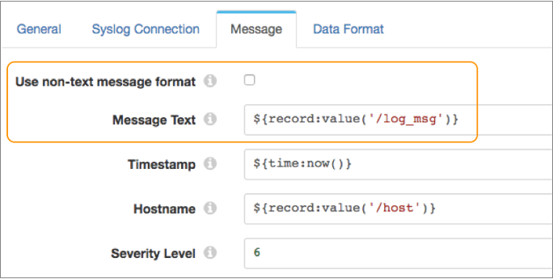

Syslog
The Syslog destination writes syslog messages to a Syslog server.
For example, you might have network devices that write log messages to flat files. You need to send these flat files to a centralized Syslog server, but the messages first must be converted to syslog messages. You design a pipeline that reads the flat files, performs some processing on the data, and then uses a Syslog destination that formats the data into syslog messages and writes the messages to the Syslog server.
When you configure the Syslog destination, you define the host name and port number of the Syslog server. You also define whether to use the UDP or TCP protocol to send messages to the server. If using the TCP protocol, you can optionally enable SSL/TLS for the destination.
You construct the syslog message content by specifying expressions that evaluate to the message values - such as the timestamp, facility code, severity level, message ID, and the log message itself.
You'll typically want to write the log message using the text data format. However, if needed, you can configure the Syslog destination to use a different data format for the log message.
Protocol
Enabling SSL/TLS
If you configure the Syslog destination to use the TCP protocol, you can enable the destination to use SSL/TLS to connect to the Syslog server.
Message Content
A syslog message includes fields such as a timestamp, facility code, severity level, message ID, and the log message itself. You construct the syslog message content by specifying the message values or expressions that evaluate to the message values.
You'll typically want to write the log message using the text data format. However, if needed, you can configure the Syslog destination to use a different data format for the log message.
Use the Message tab to configure the destination to write the log message in one of the following formats:
- Text message
-
To write the log message as text, clear the Use Non-text Message Format property on the Message tab, and then for the Message Text property, define an expression that evaluates to the log message.
For example, if a field named
log_msgcontains the message, define the following expression:${record:value('/log_msg')}Enter values or expressions for the remaining message properties. In most cases, you'll want to define expressions to call fields in the record that contain the message values.
For example, the following image shows a Syslog destination configured to use the text data format for the log message. The image also shows a few of the remaining message properties, including the timestamp and host name defined with expressions and the severity level set to the default value of 6:

- Non-text message
-
To write the log message using a different data format, select the Use Non-text Message Format property on the Message tab and then configure the data format on the Data Format tab.
When you use a non-text message format, the data used for the log message field in the syslog message depends on the chosen data format on the Data Format tab. For the Binary data format, the destination writes data from a single field in the record to the log message field. For the remaining data formats, the destination writes data from all fields in the record to the log message field.
Enter values or expressions for the remaining message properties. In most cases, you'll want to define expressions to call fields in the record that contain the message values.
For example, the following image shows a Syslog destination configured to use a non-text message format. The chosen data format is configured on the Data Format tab:

Data Formats
If you choose to write messages using a non-text format, you can use the following data formats:
- Avro
- The destination writes records based on the Avro schema. You can use one of the following methods to specify the location of the Avro schema definition:
- Binary
- The destination writes binary data from a single field in the record.
- Delimited
- The destination writes records as delimited data. When you use this data format, the root field must be list or list-map.
- JSON
- The destination writes records as JSON data. You can use one of
the following formats:
- Array - Each file includes a single array. In the array, each element is a JSON representation of each record.
- Multiple objects - Each file includes multiple JSON objects. Each object is a JSON representation of a record.
- Protobuf
- Writes one record in a message. Uses the user-defined message type and the definition of the message type in the descriptor file to generate the message.
- SDC Record
- The destination writes records in the SDC Record data format.
- XML
- The destination creates a valid XML document for each record. The
destination requires the record to have a single root field that
contains the rest of the record data. For details and
suggestions for how to accomplish this, see Record Structure Requirement.
The destination can include indentation to produce human-readable documents. It can also validate that the generated XML conforms to the specified schema definition. Records with invalid schemas are handled based on the error handling configured for the destination.
Configuring a Syslog Destination
Configure a Syslog destination to write syslog messages to a Syslog server.
-
In the Properties panel, on the General tab, configure the
following properties:
General Property Description Name Stage name. Description Optional description. Required Fields 
Fields that must include data for the record to be passed into the stage. Tip: You might include fields that the stage uses.Records that do not include all required fields are processed based on the error handling configured for the pipeline.
Preconditions Conditions that must evaluate to TRUE to allow a record to enter the stage for processing. Click Add to create additional preconditions. Records that do not meet all preconditions are processed based on the error handling configured for the stage.
On Record Error Error record handling for the stage: - Discard - Discards the record.
- Send to Error - Sends the record to the pipeline for error handling.
- Stop Pipeline - Stops the pipeline. Not valid for cluster pipelines.
-
If using a non-text data format for the log message, click the Data
Format tab, and then configure the following property:
Data Format Property Description Data Format Format of data to be written. Use one of the following options: - Avro
- Binary
- Delimited
- JSON
- Protobuf
- SDC Record

- XML
-
For Avro data, on the Data Format tab, configure the
following properties:
Avro Property Description Avro Schema Location Location of the Avro schema definition to use when writing data: - In Pipeline Configuration - Use the schema that you provide in the stage configuration.
- In Record Header - Use the schema in the avroSchema
record header attribute. Use only when the
avroSchema attribute is defined for all records.
- Confluent Schema Registry - Retrieve the schema from the Confluent Schema Registry.
Avro Schema Avro schema definition used to write the data. You can optionally use the runtime:loadResource function to use a schema definition stored in a runtime resource file.
Register Schema Select to register a new Avro schema with the Confluent Schema Registry. Schema Registry URLs Confluent Schema Registry URLs used to look up the schema or to register a new schema. To add a URL, click Add. Use the following format to enter the URL: http://<host name>:<port number>Look Up Schema By Method used to look up the schema in the Confluent Schema Registry: - Subject - Look up the specified Avro schema subject.
- Schema ID - Look up the specified Avro schema ID.
Schema Subject Avro schema subject to look up or to register in the Confluent Schema Registry. If the specified subject to look up has multiple schema versions, the origin uses the latest schema version for that subject. To use an older version, find the corresponding schema ID, and then set the Look Up Schema By property to Schema ID.
Schema ID Avro schema ID to look up in the Confluent Schema Registry. Include Schema Includes the schema in each message. Note: Omitting the schema definition can improve performance, but requires the appropriate schema management to avoid losing track of the schema associated with the data.Avro Compression Codec The Avro compression type to use. When using Avro compression, do not enable other compression available in the destination.